1 山峦图
1.1 简介
参考 Introduction to ggridges 和 Gallery of ggridges examples
山峦图(ridgeline plot, 也叫作山脊线图)同样是一种对数据分布的可视化方法。ggridges 包主要用来绘制山峦图，同时可以很好地反映数据分布在不同时间、不同空间下的对比情况。ggridges 主要提供两个几何图像函数：
geom_density_ridges(aes(x, y)): 根据几何变换density_ridges，绘制变量x在分组变量 y 上(如果 y 不是分类变量，要手动指定aes(group = y))的核密度曲线，且填充曲线下方面积(此时曲线的高度是统计变换自行计算的核密度估计)
geom_ridgeline(aes(x, y, height))： 绘制变量x在分组变量 y 上的面积图，高度由height指定(统计变换stat = "identity")
这两个几何对象的关系很像geom_bar() 和 geom_bar(stat = "identity")
一些简单的例子：
## ridgeline
data <- data.frame(x = 1:5, y = rep(1, 5), height = c(0, 1, 3, 4, 2))
ggplot(data, aes(x, y, height = height)) +
geom_ridgeline() ## y 只有一个水平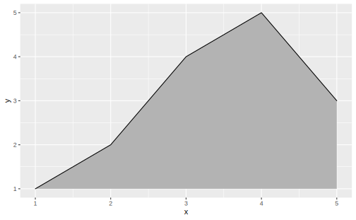
## density_ridgeline
ggplot(iris, aes(x = Sepal.Length,
y = Species)) +
geom_density_ridges(aes(fill = Species))
ggridges 还提供了一个专门用于呈现山脊线图的主题设置 theme_ridges:
ggplot(iris, aes(x = Sepal.Length,
y = Species)) +
geom_density_ridges(aes(fill = Species)) +
theme_ridges() 
1.2 ridgeline
和 geom_line() 类似，群组对象geom_ridgeline() 默认将所有传递 y 参数的变量作为分组变量(geom_line()将所有传入的离散变量的组合作为分组变量)，如果传入 y 的变量本身不是离散的，那么要手动指定 aes(group = y):
## 以 y 为分组变量的面积图
d <- data.frame(x = rep(1:5, 3), y = c(rep(0, 5), rep(1, 5), rep(3, 5)),
height = c(0, 1, 3, 4, 0, 1, 2, 3, 5, 4, 0, 5, 4, 4, 1))
ggplot(d, aes(x, y, height = height, group = y)) +
geom_ridgeline(fill = "lightblue")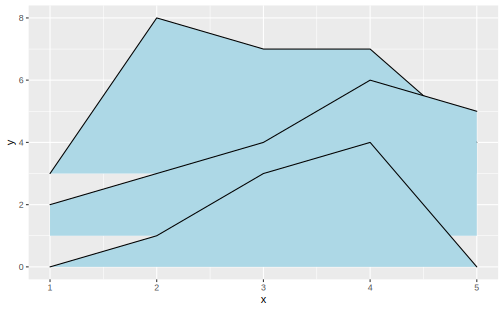
允许 height 中有负数，但同时要在 geom_ridgeline() 中设置 min_height，否则图表在 y 轴的下半部分将不予显示：
data <- data.frame(x = 1:5, y = rep(1, 5), height = c(0, 1, -1, 3, 2))
ggplot(data, aes(x, y, height = height)) +
geom_ridgeline(aes(group = y))
ggplot(data, aes(x, y, height = height)) +
geom_ridgeline(aes(group = y), min_height = -10)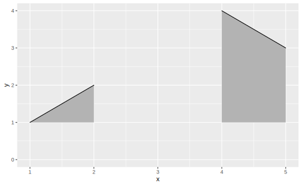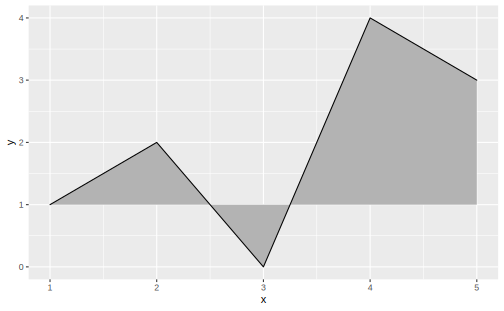
在 geom_density_ridges() 中设置 stat = "identity" 并传入 height 参数，效果与 geom_ridgeline() 等同：
d <- data.frame(x = rep(1:5, 3), y = c(rep(0, 5), rep(1, 5), rep(3, 5)),
height = c(0, 1, 3, 4, 0, 1, 2, 3, 5, 4, 0, 5, 4, 4, 1))
ggplot(d, aes(x, y, height = height, group = y)) +
geom_density_ridges(stat = "identity", fill = "lightblue")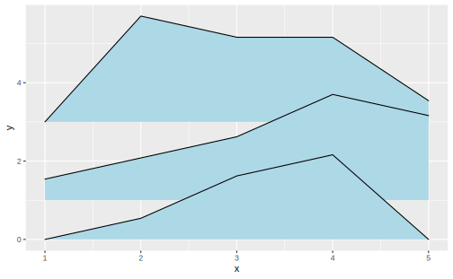
1.3 density_ridges()
geom_density_ridges() 计算一定分组下 x 的核密度估计，并绘制面积图，它有一个变体 geom_density_ridges2()，这时面积图是封闭的多边形：
p <- ggplot(iris, aes(Sepal.Length, Species))
p +
geom_density_ridges() +
theme_ridges()
p +
geom_density_ridges2() +
theme_ridges()Figure 1.1: geom_density_ridges2() use enclosed polygons
geom_density_ridges() 和 geom_ridgelines() 在分组变量的处理上等同：
iris_num <- iris %>%
mutate(Species_num = as.numeric(Species))
ggplot(iris_num, aes(Sepal.Length, y = Species_num, group = Species_num)) +
geom_density_ridges()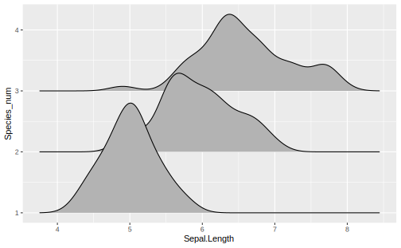
山脊线图的长尾部分可以通过设置 rel_min_height (relative min height) 截断，例如 rel_min_height = 0.01将截断密度估计小于最高点 1% 的全部尾部。一般而言 0.01 这个值已经比较合适了，但是不同的数据集可能还是要自行调整：
ggplot(iris_num, aes(Sepal.Length, y = Species_num, group = Species_num)) +
geom_density_ridges(rel_min_height = 0.01)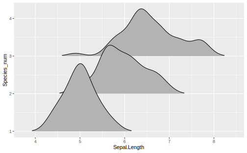
scale 参数控制不同分组的密度面积图的重叠情况，scale = 1 意味着最高的密度曲线正好触及到第二高密度曲线的基线。scale 越小，分隔越大；scale越大，重叠越多：
Figure 1.2: scale = 0.8 vs. scale = 2
1.4 映射填充色 (Varying fill colors along the x axis)
ggridges 提供了两个函数 geom_ridgeline_gradient() 和 geom_density_ridge_gradient()，它们与对应的 geom_ridgeline 和 geom_density_ridge_gradient() 的工作方式完全相同，但 gradient 版本允许面积图的填充色沿着 x 轴变化。 然而，出于 R 绘图系统的天然限制，在 gradient 版本的山脊线图中不能同时设置透明度。
一个使用 geom_ridgeline_gradient() 的例子：
library(viridis)
d <- data.frame(x = rep(1:5, 3) + c(rep(0, 5), rep(0.3, 5), rep(0.6, 5)),
y = c(rep(0, 5), rep(1, 5), rep(3, 5)),
height = c(0, 1, 3, 4, 0, 1, 2, 3, 5, 4, 0, 5, 4, 4, 1))
ggplot(d, aes(x, y, height = height, group = y, fill = factor(x + y))) +
geom_ridgeline_gradient() +
scale_fill_viridis(discrete = TRUE, direction = -1)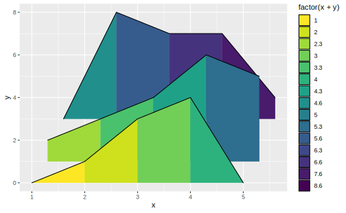
下面是一个用 geom_density_ridges_gradient() 的例子：
fill 上的不是原数据集中的变量 temperature，而是生成变量 ..x..。
因为geom_density_ridges_gradient 的统计变换 stat_density_ridges 在估计密度同时生成了新的 x 轴变量
lincoln_weather ## 顺便提一下，这是个典型的 messy dataset
#> # A tibble: 366 x 24
#> CST `Max Temperatur~ `Mean Temperatu~ `Min Temperatur~ `Max Dew Point ~
#> <chr> <int> <int> <int> <int>
#> 1 2016~ 37 24 11 19
#> 2 2016~ 41 23 5 22
#> 3 2016~ 37 23 8 23
#> 4 2016~ 30 17 4 24
#> 5 2016~ 38 29 19 29
#> 6 2016~ 34 33 32 33
#> # ... with 360 more rows, and 19 more variables: `Mean Dew Point [F]` <int>,
#> # `Min Dewpoint [F]` <int>, `Max Humidity` <int>, `Mean Humidity` <int>, `Min
#> # Humidity` <int>, `Max Sea Level Pressure [In]` <dbl>, `Mean Sea Level
#> # Pressure [In]` <dbl>, `Min Sea Level Pressure [In]` <dbl>, `Max Visibility
#> # [Miles]` <int>, `Mean Visibility [Miles]` <int>, `Min Visibility
#> # [Miles]` <int>, `Max Wind Speed [MPH]` <int>, `Mean Wind Speed[MPH]` <int>,
#> # `Max Gust Speed [MPH]` <int>, `Precipitation [In]` <chr>, CloudCover <int>,
#> # Events <chr>, `WindDir [Degrees]` <int>, Month <fct>
ggplot(lincoln_weather, aes(x = `Mean Temperature [F]`,
y = `Month`,
fill = ..x..)) +
geom_density_ridges_gradient(scale = 3, rel_min_height = 0.01) +
scale_fill_viridis(name = "Temp. [F]", option = "C") +
labs(title = 'Temperatures in Lincoln NE in 2016') +
theme_ridges()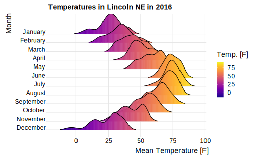
尽管最常见的做法是把 ..x.. 分组变量 y 、生成变量 ..quantile.. 映射到 fill 上，但这不是全部可能，下面的例子使用 ggridges::Catalan_elections 数据集，它记录了加泰罗尼亚地区 949 个自治市 1980 - 2015 年以来在 11 次地区大选中对 Indy 和 Unionist 两党的投票情况：
Catalan_elections
#> # A tibble: 20,764 x 4
#> Municipality Year Option Percent
#> <chr> <int> <chr> <dbl>
#> 1 Abella de la Conca 1980 Indy 68.4
#> 2 Abella de la Conca 1984 Indy 95.7
#> 3 Abella de la Conca 1988 Indy 89.4
#> 4 Abella de la Conca 1992 Indy 81.7
#> 5 Abella de la Conca 1995 Indy 80
#> 6 Abella de la Conca 1999 Indy 74.7
#> # ... with 2.076e+04 more rowsCatalan_elections %>%
mutate(Year = fct_rev(as.factor(Year))) %>%
ggplot(aes(Percent, Year,
fill = Option)) +
geom_density_ridges(alpha = 0.6) +
theme_ridges() +
scale_fill_manual(values = c("#ff0000", "#0000ff")) +
scale_x_continuous(expand = c(0.01, 0)) +
scale_y_discrete(expand = c(0, 0)) +
labs(title = "Indy vs Unionist vote in Catalan elections",
subtitle = "Analysis unit: municipalities (n = 949)") +
theme(axis.title.y = element_blank())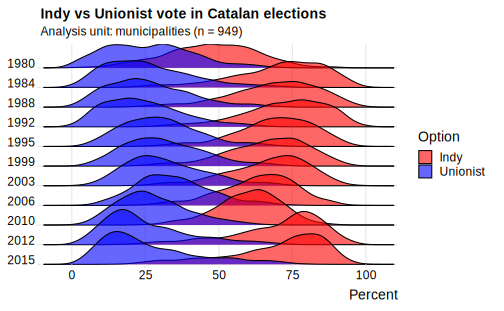
1.5 统计变换
可以把 stat_density_ridges 看作是山脊线图版本的 stat_density，除了自动用生成的密度估计映射到 height 上以外，这个统计变换还提供了一些很有用的特色。
1.5.1 分位数线
(Quantile lines and coloring by quantiles or probabilities)
在 stat_density_ridges() 中设置 quantile_lines = TRUE 可以在图形中添加分位数线：
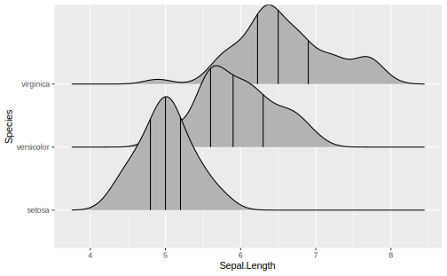
geom_density_ridges() 中没有本节中很多参数的代码提示，但效果与在统计变换中设置参数相同
可以用 quantiles 参数控制分位数的计算：
## 将密度面积图分为两段，只计算中位数
p +
stat_density_ridges(quantile_lines = TRUE,
quantiles = 2)
## 指定计算两个分位数
p +
stat_density_ridges(quantile_lines = TRUE,
quantiles = c(0.025, 0.975),
alpha = 0.7) 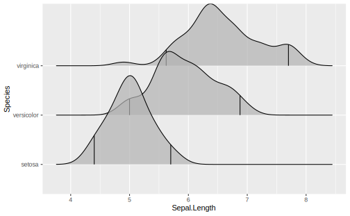
我们同样可以把分位数的生成变量 ..quantile..(设置scale_fill_viridis(discrete = T后，这个生成变量不再是具体的数值，而是标识 x 属于某个分位区间的离散变量) 映射到 fill 属性上，但必须在统计变换stat_density_ridges()中设定 calc_ecdf = TRUE 才能引用这个生成变量：
ggplot(iris, aes(Sepal.Length, Species, fill = ..quantile..)) +
stat_density_ridges(calc_ecdf = T,
geom = "density_ridges_gradient") +
scale_fill_viridis(discrete = TRUE,
name = "Quartiles")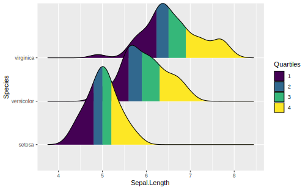
stat_density_ridges 中设定 geom = "density_ridges_gradient"。该统计变换的几何对象 geom_density_ridges 可不支持沿 x 轴变换填充色。
借用以上的思路，如果我们想强调分布的尾端，可以这样做：
ggplot(iris, aes(Sepal.Length, Species, fill = ..quantile..)) +
stat_density_ridges(calc_ecdf = T,
quantiles = c(0.025, 0.975),
geom = "density_ridges_gradient") +
scale_fill_manual(
values = c("#FF0000A0", "#A0A0A0A0", "#0000FFA0"),
labels = c("(0, 0.025]", "(0.025, 0.975]", "(0.975, 1]"),
name = "Probability"
)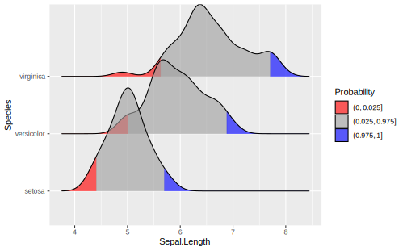
calc_ecdf = T 时，还可以引用另外一个生成变量 ..ecdf..，即经验分布函数的值：
ggplot(iris, aes(Sepal.Length, Species, fill = ..ecdf..)) +
stat_density_ridges(calc_ecdf = T, geom = "density_ridges_gradient") +
scale_fill_viridis(name = "Tail Probablity",
direction = -1)
quantile_lines = T 将自动设置 calc_ecdf = T
1.5.2 添加抖动点
stat_density_ridges 同样提供了一个选项，可以直接显示数据点的分布情况，在统计变换或几何对象中设置 jittered_points = TRUE:

位置调整 position = "raincloud" 将抖动点移至面积图下部，类似云雨图的效果：
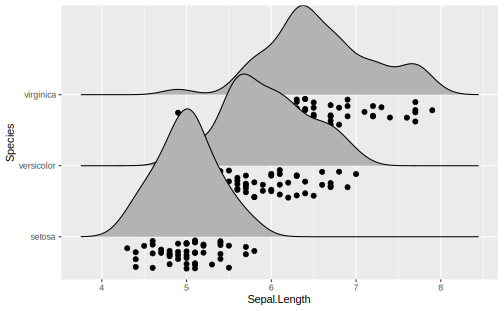
调整 scale 和 alpha 减小遮盖：
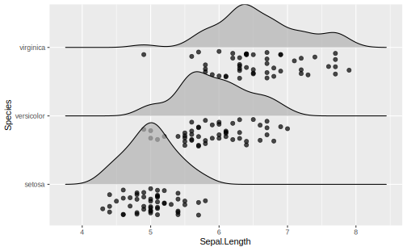
也可以模拟一个地毯图：
p +
geom_density_ridges(
jittered_points = TRUE,
position = position_points_jitter(width = 0.05, height = 0),
point_shape = '|', point_size = 3, point_alpha = 1, alpha = 0.7,
)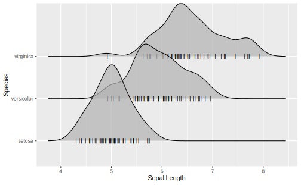
注意上面所用的位置调整是 position_points_jitter(), 若是position_jitter() 则密度图也要被抖动了，而之前使用的position_raincloud本就是针对整体的位置调整。
为了设置这些抖动点的样式，ggridges 提供了一个特殊的标度调整 scale_discrete_manual，我们可以用它为任意离散映射手动设置标度。除此之外，还有很多关于抖动点属性的标度族scale_point_*:
ggplot(iris, aes(x=Sepal.Length, y=Species, fill = Species)) +
geom_density_ridges(
aes(point_color = Species, point_fill = Species, point_shape = Species),
alpha = .2,
point_alpha = 1,
jittered_points = TRUE
) +
scale_point_color_hue(l = 40) +
scale_discrete_manual(aesthetics = "point_shape", values = c(21, 22, 23))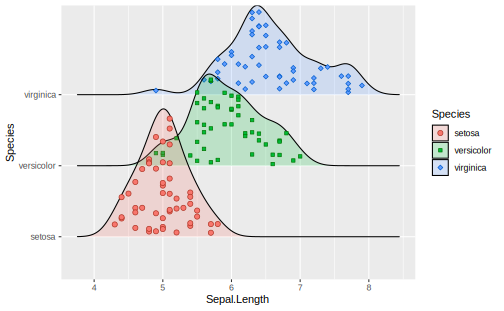
所有在 ggplot2 中点的属性都可以在这里被映射，例如我们将 Petal.Length 映射到点的大小上：
ggplot(iris, aes(Sepal.Length, Species, fill = Species)) +
geom_density_ridges(aes(point_shape = Species,
point_fill = Species,
point_size = Petal.Length),
jittered_points = T,
alpha = 0.2,
point_alpha = 1) +
scale_point_color_hue(l = 40) +
scale_point_size_continuous(range = c(0.5, 4)) +
scale_discrete_manual(aesthetics = "point_shape", values = c(21, 22, 23))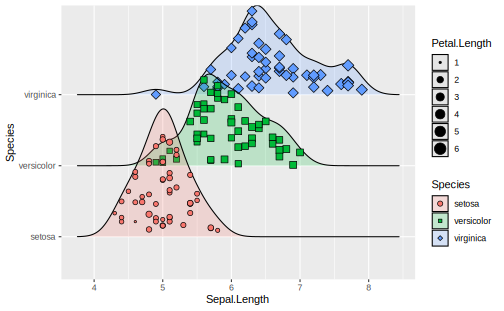
类似的，可以用 vline_* 开头的属性族控制分位数线的形态,可以把山峦图、抖动点和分位数线同时呈现，例如：
ggplot(iris, aes(x = Sepal.Length, y = Species)) +
geom_density_ridges(
jittered_points = TRUE, quantile_lines = TRUE,
scale = 0.9, alpha = 0.7,
vline_size = 1, vline_color = "blue",
point_size = 0.4, point_alpha = 1,
position = position_raincloud(adjust_vlines = T)) ## 否则分位数线在原位置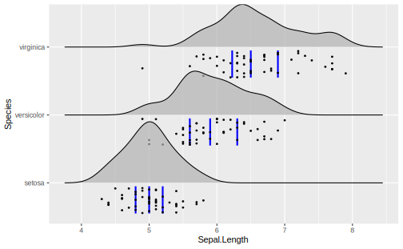
1.5.3 其他统计变换
我们可以在 geom_density_ridges 中设置其他的统计变换，例如 stat_density，它和 stat_density_ridges 在具体的密度估计算法上有一些差别 :
Figure 1.3: stat_density vs. stat_density_ridges
stat_density_ridges estimates the data range and bandwidth for the density estimation from the entire data at once, rather than from each individual group of data.
如果相对于密度曲线更偏爱直方图，可以用统计变换 stat = "binline"，一般而言对于直方图都会设置(scale < 1)，同时可设置 draw_baseline = F 取消直方图两端的水平线(rel_min_height 对于直方图效果不好)：
p +
geom_density_ridges(aes(fill = Species),
stat = "binline",
draw_baseline = F,
scale = 0.8,
alpha = 0.4)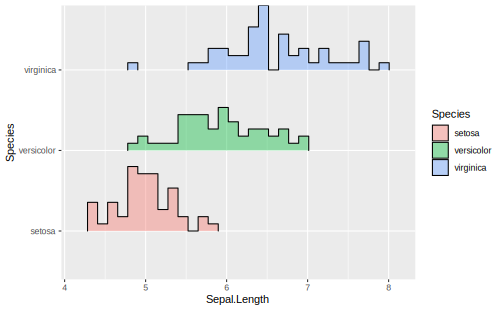
1.6 主题
在简介中，介绍过 ggridges 为山脊线图专门设计的主题 theme_ridges, 不妨查看一下它的代码：
#>
#> theme_ridges <- function(font_size = 14, font_family = "", line_size = .5, grid = TRUE, center_axis_labels = FALSE) {
#> half_line <- font_size / 2
#> small_rel <- 0.857
#> small_size <- small_rel * font_size
#> color <- "grey90"
#>
#> if (grid) {
#> panel.grid.major <- element_line(colour = color, size = line_size)
#> axis.ticks <- element_line(colour = color, size = line_size)
#> axis.ticks.y <- axis.ticks
#> }
#> else {
#> panel.grid.major <- element_blank()
#> axis.ticks <- element_line(colour = "black", size = line_size)
#> axis.ticks.y <- element_blank()
#> }
#>
#> if (center_axis_labels) {
#> axis_just <- 0.5
#> }
#> else {
#> axis_just <- 1.0
#> }简单来说，theme_ridges() 取消了大部分网格线(只要用户没有提前设置grid())，并修改了刻度线的样式，取消了 y 轴上的刻度线
p +
geom_density_ridges(aes(fill = Species))
p +
geom_density_ridges(aes(fill = Species)) +
theme_ridges() 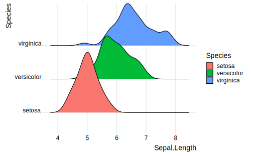
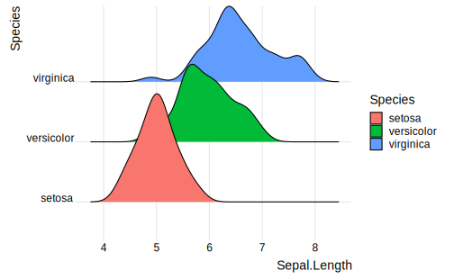
Figure 1.4: default theme vs. theme_ridges()
在添加theme_ridges()的基础上，还可以进一步设置标度中的expand，使图形更加紧凑：
p +
geom_density_ridges(aes(fill = Species)) +
theme_ridges() +
scale_x_continuous(expand = c(0.01, 0)) +
scale_y_discrete(expand = c(0.01, 0))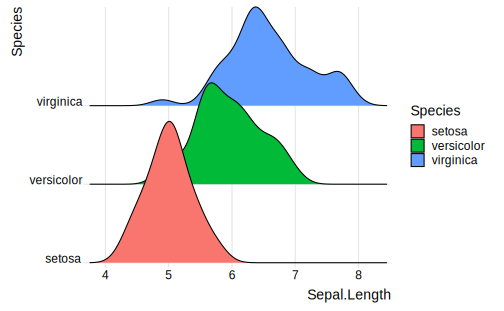
用 bbplot::bbc_style() 做主题，似乎效果也不错：
windowsFonts(Helvetica = "TT Arial")
p +
geom_density_ridges(aes(fill = Species)) +
bbplot::bbc_style()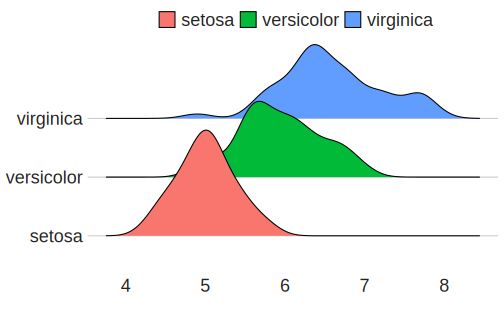
1.7 循环标度
经验上，当密度面积图的填充色有一定的交替规律时，山脊线图最能吸引人，出于此，ggridges 提供了循环标度 (cyclical scales)。这些标度可以循环使用提供给它们的属性值，例如 scale_fill_cyclical(values = c("blue", "green")) 将交替使用蓝色和绿色作为填充色：
ggplot(diamonds, aes(price, cut, fill = cut)) +
geom_density_ridges(scale = 4) +
scale_fill_cyclical(values = c("blue", "green"))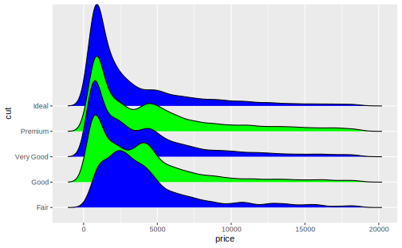
默认情况下，循环标度不显示图例，guide = legend 可以改变这一点，但这种图例往往具有误导性：
## 循环标度的图例
ggplot(diamonds, aes(price, cut, fill = cut)) +
geom_density_ridges(scale = 4) +
scale_fill_cyclical(values = c("blue", "green"),
guide = "legend")普通标度中中修饰图例的方法在循环标度中依然适用：
ggplot(diamonds, aes(price, cut, fill = cut)) +
geom_density_ridges(scale = 4) +
scale_fill_cyclical(
values = c("blue", "green"), guide = "legend",
labels = c("Fair" = "blue", "Good" = "green"),
name = "Fill colors"
)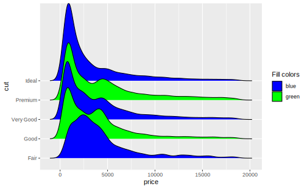
可以为多个属性设置循环标度，设置相同的label、value、name时图例会自行合并：
ggplot(diamonds, aes(price, cut,
fill = cut, color = cut)) +
geom_density_ridges(scale = 4, size = 1) +
scale_fill_cyclical(
values = c("blue", "green"), guide = "legend",
labels = c("Fair" = "blue w/ black outline",
"Good" = "green w/ yellow outline"),
name = "Color scheme"
) +
scale_color_cyclical(
values = c("black", "yellow"), guide = "legend",
labels = c("Fair" = "blue w/ black outline",
"Good" = "green w/ yellow outline"),
name = "Color scheme"
)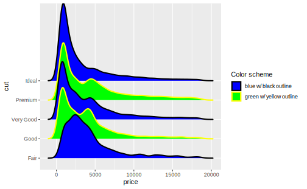
循环标度同样可以运用到 ggridges 以外的图形中：
mpg %>% group_by(class) %>% tally() %>% arrange(desc(n)) %>%
mutate(class = factor(class, levels = class)) %>%
ggplot(aes(class, n, fill = class)) +
geom_col() +
scale_fill_cyclical(values = c("#4040B0", "#9090F0")) +
scale_y_continuous(expand = c(0, 0)) +
theme_minimal()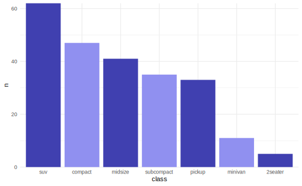
1.8 实例：澳大利亚运动员身高
本例使用数据：
df <- as_tibble(DAAG::ais)
df
#> # A tibble: 202 x 13
#> rcc wcc hc hg ferr bmi ssf pcBfat lbm ht wt sex sport
#> <dbl> <dbl> <dbl> <dbl> <dbl> <dbl> <dbl> <dbl> <dbl> <dbl> <dbl> <fct> <fct>
#> 1 3.96 7.5 37.5 12.3 60 20.6 109. 19.8 63.3 196. 78.9 f B_Ba~
#> 2 4.41 8.3 38.2 12.7 68 20.7 103. 21.3 58.6 190. 74.4 f B_Ba~
#> 3 4.14 5 36.4 11.6 21 21.9 105. 19.9 55.4 178. 69.1 f B_Ba~
#> 4 4.11 5.3 37.3 12.6 69 21.9 126. 23.7 57.2 185 74.9 f B_Ba~
#> 5 4.45 6.8 41.5 14 29 19.0 80.3 17.6 53.2 185. 64.6 f B_Ba~
#> 6 4.1 4.4 37.4 12.5 42 21.0 75.2 15.6 53.8 174 63.7 f B_Ba~
#> # ... with 196 more rows可以将运动项目作为分组变量，但绘图之前先要将其重新编码：
df$sport <- fct_recode(df$sport,
"Basketball" = "B_Ball",
"Track 400m" = "T_400m",
"Track Sprint" = "T_Sprnt",
"Water Polo" = "W_Polo"
)绘制基本图形：

添加抖动点、将性别 sex 映射到 fill 上：
p2 <- p1 +
stat_density_ridges(aes(fill = sex, point_color = sex), alpha = 0.4,
jittered_points = TRUE, point_shape = "|",
point_size = 2, size = 0.25,
position = position_points_jitter(height = 0))
p2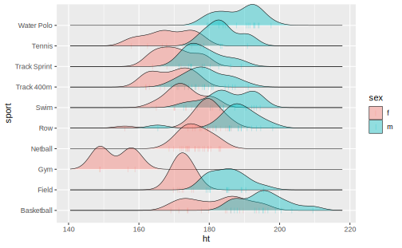
标度调整、图例修饰、主题设置:
p2 +
scale_y_discrete(expand = c(0.01, 0)) +
scale_x_continuous(expand = c(0, 0), name = "height [cm]") +
scale_fill_manual(values = c("#D55E0050", "#0072B250"), labels = c("female", "male")) +
scale_discrete_manual("point_color", values = c("#D55E00", "#0072B2"), guide = "none") +
guides(fill = guide_legend(
override.aes = list(
fill = c("#D55E00A0", "#0072B2A0"),
color = NA, point_color = NA))
) +
labs(title = "Heights of Australian Atheletes") +
theme_ridges()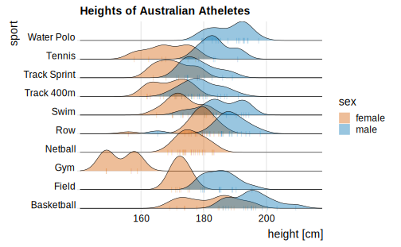